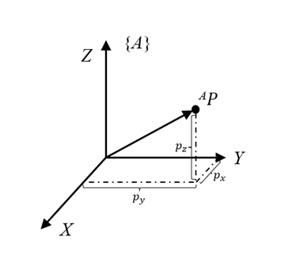
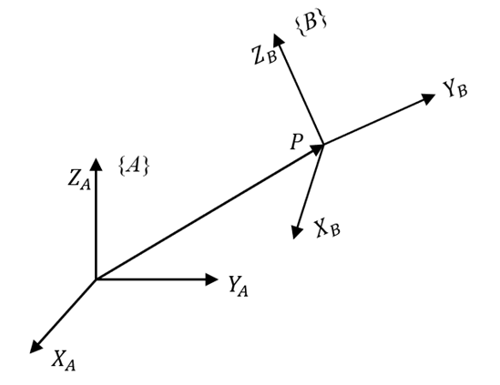
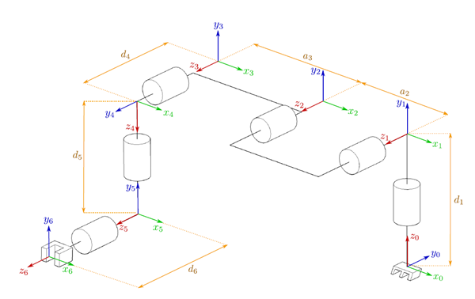
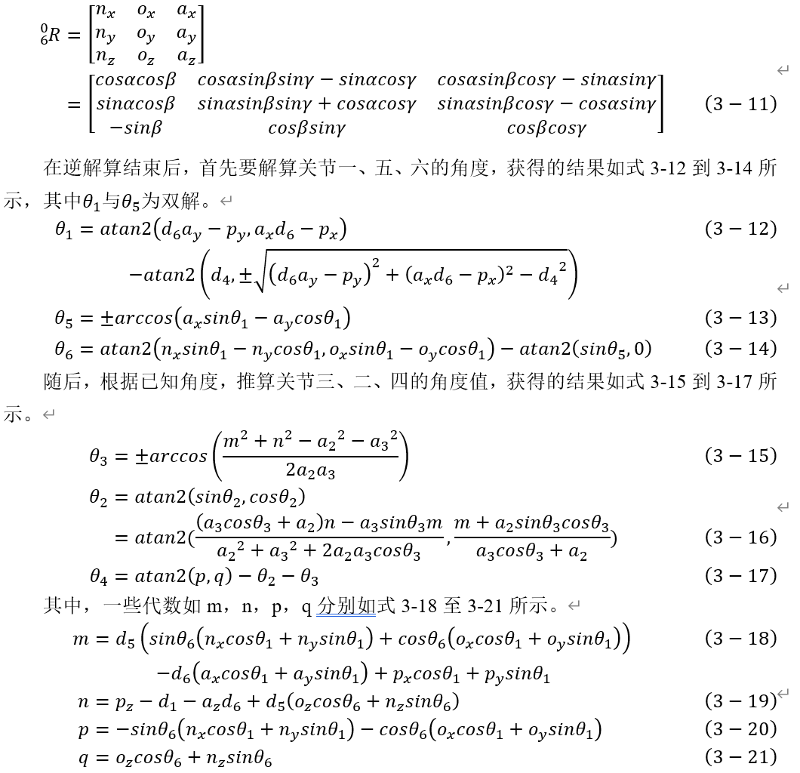

1.运动学解算
有关机器人的运动学解算，在机器人学中算是一个基础且庞大的部分，在这里就简单的基于毕设开发FR3机械臂，简单介绍一下有关六轴机械臂的关节坐标系解算问题，有助于后期系统性学习机器人学的问题。
1.1 使用DH参数的机械臂正向运动学解算
机械臂的控制目标通常为末端工具在基坐标系中的位置与姿态，但机械臂通常能够获知的传感器消息仅有六关节电机当前的角度信息，因此，如果想获得末端工具当前所在的位置，我们需要通过机械臂的运动学解算获得。
在运动学中，描述三维空间中物体的运动状态通常需要六个变量进行描述（\(x,y,z,r,p,y\)）,一个物体在三维世界中自由运动的一共具有六个自由度。在这些变量中，由（\(x,y,z\)）决定该物体在三维世界中的空间位置，由（\(r,p,y\)）决定该物体在当前位置上的空间姿态。
机器人的位置和姿态在下面统称位姿，由于机器人在三维空间中具有六个自由度，且空间位置与空间姿态各自决定位置点与姿态，因此需要两种数学描述进行表达。首先是位置的数学描述，示意图下图所示，\(X,Y,Z\)为相互正交的矢量，表达参考坐标系\(A\)。同样使用一个适量来表达三维空间的一个坐标点\({^AP}\)。

其中，坐标点\({^AP}\)在\(X,Y,Z\)坐标系上的投影距离分别为\({p_x,p_y,p_z}\)。因此，其在空间中的位置表达可以用一个向量表示，如式1所示：
空间点的姿态描述的对象通常为两个矩阵之间的相对姿态关系，如下图，为两组正交的三个矢量组成的，我们用坐标系\(B\)相对于坐标系\(A\)的关系来描述物体的姿态。其中，坐标系\(B\)在参考坐标系\(A\)中的表示可以被描述为\({^AX_B,^AY_B,^AZ_B}\)。通常通过一个3X3的矩阵来表示坐标系\(B\)相对于坐标系\(A\)的姿态描述,如式2所示:

由于三维空间中物体的运动状态由两组数学表达,因此当物体发生运动时,需要通过两种数学表达来说明各自的变换关系,如空间位置上的平移通常用\(Translation\)表示，内容与构成如式3组成，其中\({\Delta X,\Delta Y,\Delta Z}\), 分别是两个坐标系间的距离差值。
姿态的表达方式多种多样,不仅限于欧拉角，还包括旋转矩阵和四元数,三者之间存在转换关系,这里我们用旋转矩阵作为例子。由于旋转矩阵在连续空间变换中具有便利性（只需左乘或右乘即可完成变换），因此通常使用旋转矩阵（\(Rotation\)）来表达空间点的位姿。为了方便计算，我们将平移（\(Translation\)）和旋转（\(Rotation\)）结合，构成新的转换关系 ,如式4所示，\(Transformation\)为齐次变换矩阵：
在进行变换时，只需针对这样的矩阵进行操作即可。
在两个运动学中，常用的方法是使用DH参数模型计算机械臂关节与关节之间的位姿转换关系，推导的关系如下图所示的连杆结构：

在建立好连杆坐标系后，需要根据连杆坐标系的相对位置，以确定两个坐标系之间的相对位置关系，定义的四个参数分别为
\(a_i\)，在连杆坐标系中沿着\(x_i\),从\(z_i\)轴到\(x_{i+1}\)之间平移的距离；
\(\alpha _i\)，为绕\(x_i\)轴使\(z_i\)轴与\(z_{i+1}\)轴平行的角度;
\(d_i\)，为沿着\(z_i\)从\(x_i\)轴到\(x_{i+1}\)之间平移的距离；
\(\theta_i\) ，为绕\(z_i\)轴使\(x_i\)轴与\(x_{i+1}\)轴重合的角度。
现在我们使用数学方法表示这样的过程，在前文中我们已经用一种齐次变换矩阵的方式表达坐标系的变换过程,因此在这里，我们用齐次变换矩阵的方式，分别对这四部进行表达，如式5所示。
其中，\(Rot(Z,\theta_i)\)表示表示围绕\(Z\)轴旋转 \(\theta_ i\), 其矩阵构成如式6所示。而第二步中关于沿\(X\)轴旋转\(\alpha_ i\),由\(Rot(X,\alpha_i)\)表示，其齐次变换矩阵构成如式7所示。
\(Trans(x,y,z)\)表示分别沿着\(x,y,z\)各自移动的距离其齐次变换矩阵构成如式8所示，式5中的\(Trans(a_i,0,0)\)则表示沿着\(X\)轴平移\(a_i\)距离;\(Trans(0,0,d_i)\)则表示沿着\(Z\)轴平移\( d_i\)距离。
通过运算，将这些矩阵整合到一起，我们可以获得这样的最终的齐次变换矩阵如式9所示，仅由上述定义的\( \alpha_i , \theta_i , a_i\)构成。
因此，我们的六自由度机械臂，如果想获得最后的末端位姿，就可以通过形如式10这样的关系式传递下去：
因此，当我们确认了当前DH参数表对应的各关节角度时，就可以根据当前关节角度与建系角度之间的差值，就可以根据当前的各关节电机角度推算出最终的末端工具坐标系在基坐标系下的位置与姿态。然而，仅仅拥有解算当前机械臂的末端姿态是不足够的。为了完整的控制流程，我们需要通过目标的末端位姿，解算机械臂的各关节角度，这部分为机械臂的逆运动学解算。
1.2 使用DH参数的机械臂逆向运动学解算
到目前我还没有通过逆解算进行路径规划，所以我的理解是只需要被结果交给计算机算就可以。
